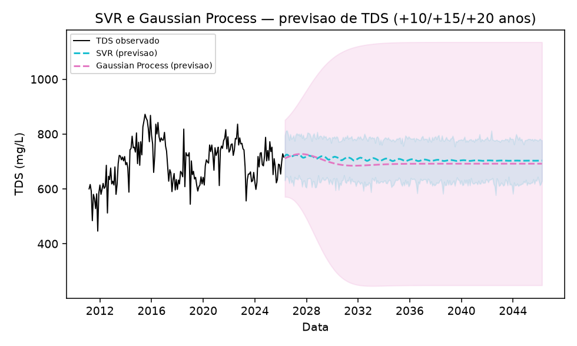
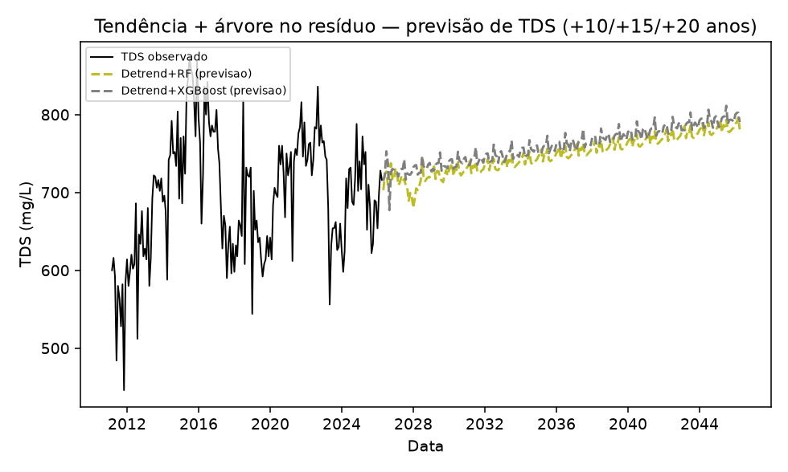
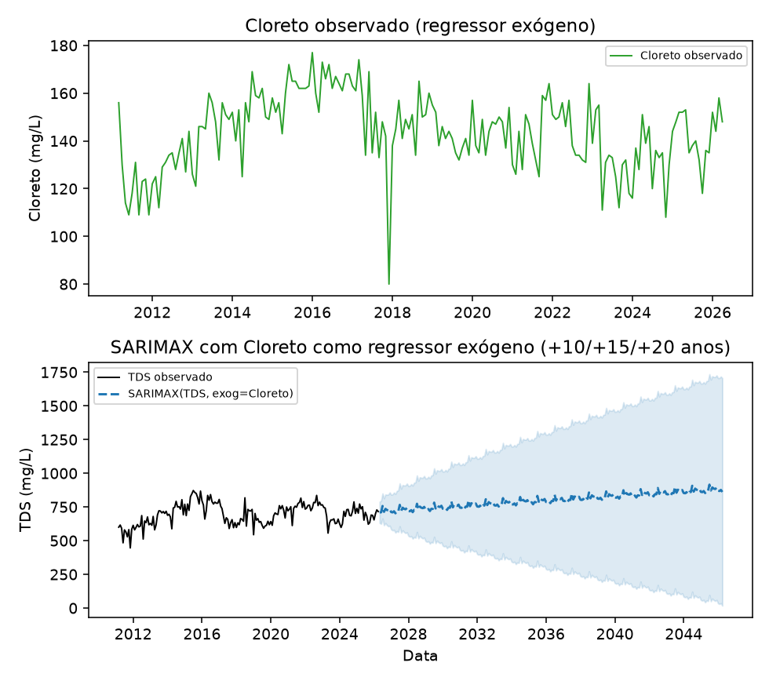
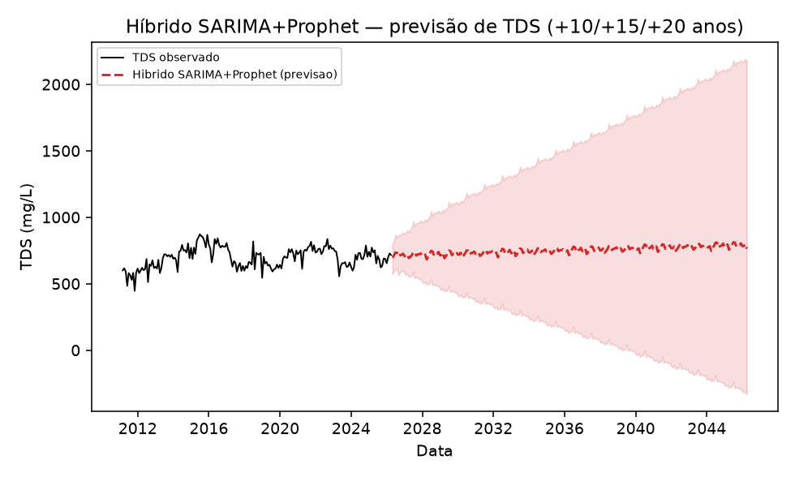
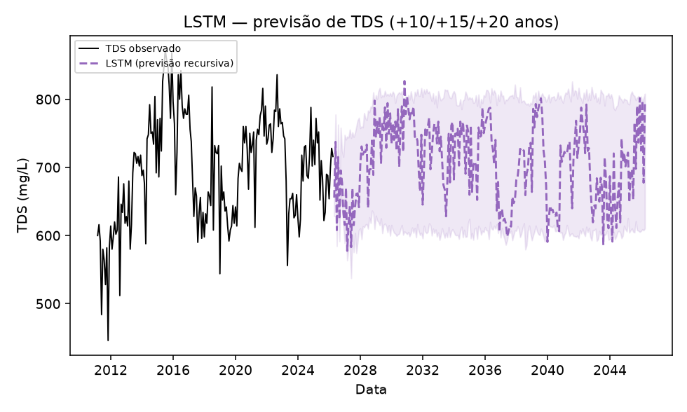
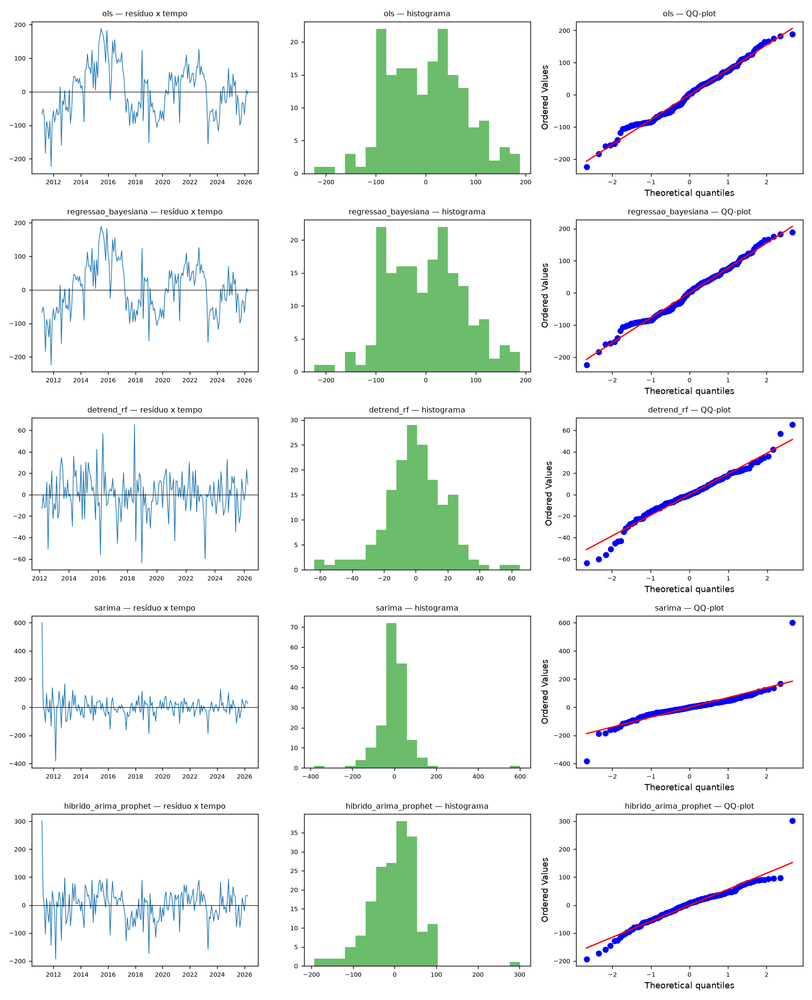
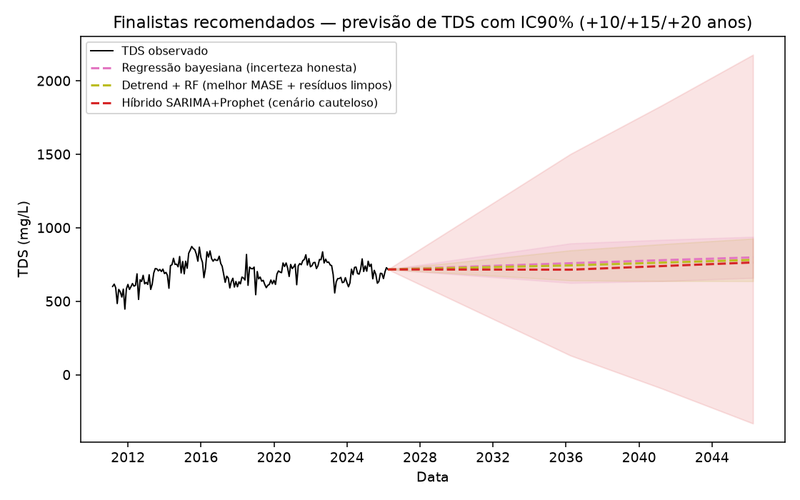

Objetivo desta lição: fechar a bateria completa (21 métodos) e entender exatamente por que regressão bayesiana, Detrend+RF e híbrido SARIMA+Prophet foram escolhidos — inclusive a correção mais recente sobre o Detrend+RF, que muda a justificativa da escolha, não a escolha em si.
Pré-requisito: Lição 0005 — A bateria de 10 métodos e os baselines. Fonte primária: ROTEIRO_AULA_TDS_LAGWRP.md, Seção B (final); issues #1/#9-#15 desta sessão (bateria de robustez).

Mais detalhe: SVR, Gaussian Process.

Mais detalhe: ficha completa.

Mais detalhe: ficha completa.

Mais detalhe: ficha completa.

Mais detalhe: ficha completa.
| Método | Tendência (mg/L/ano) | RMSE holdout | MASE holdout |
|---|---|---|---|
| SVR | -1,74* | 38,9 | 0,49 |
| Gaussian Process | 3,74 | 146,5 | 2,03 |
| Detrend + RF | 3,74 | 49,8 | 0,44 |
| Detrend + XGBoost | 3,74 | 51,5 | 0,46 |
| SARIMAX + Cloreto | 8,11 | 49,7 | 0,50 |
| Híbrido SARIMA+Prophet | 3,76 | 46,4 | 0,49 |
| LSTM | 6,84 | 71,5 | 0,69 |
Fonte: Tabela \ref{tab:metodos-adicionais} do artigo (resultados.tex, linha 228). *SVR: tendência negativa é artefato de não-extrapolação, não reversão real.
Cinco candidatos — escolhidos por equilibrarem MASE baixo e captação real de tendência sem saturar/oscilar — tiveram seus resíduos (ajustados na série completa, "in-sample") testados para autocorrelação, normalidade e heterocedasticidade.

| Método | Ljung-Box (autocorr.) | Shapiro-Wilk (normal.) | ARCH (heterocedast.) |
|---|---|---|---|
| OLS | rejeitado (p<0,0001) | não rejeitado (p=0,15) | rejeitado (p<0,0001) |
| Regressão bayesiana* | rejeitado (p<0,0001) | não rejeitado (p=0,15) | rejeitado (p<0,0001) |
| Detrend + RF | não rejeitado (p=0,24) | rejeitado (p=0,003) | não rejeitado (p=0,76) |
| SARIMA | rejeitado (p=0,0001) | rejeitado (p<0,0001) | rejeitado (p<0,0001) |
| Híbrido SARIMA+Prophet | rejeitado (p=0,0003) | rejeitado (p<0,0001) | rejeitado (p<0,0001) |
Fonte: Tabela \ref{tab:diagnostico-residuos} do artigo (resultados.tex, linha 324). "Não rejeitado" = resultado desejável (não encontrou o problema). *Resíduos da regressão bayesiana tratados como equivalentes aos da OLS, mesmo modelo linear-gaussiano.
O texto do artigo dizia originalmente: "o Detrend+RF é o único candidato sem autocorrelação residual detectável e sem heterocedasticidade condicional" — só falhando normalidade (caudas pesadas, comum em árvores). Esse diagnóstico é in-sample (ajuste na série completa que o próprio modelo viu). Essa frase já foi corrigida em resultados.tex (linha 336 e 606) e em conclusao.tex em 2026-10-12 — o texto atual do artigo já qualifica a claim como "no resíduo in-sample" e inclui o parágrafo abaixo.
O mesmo teste de Ljung-Box, repetido sobre o resíduo de holdout (previsão genuína fora da amostra, 24 meses não vistos no treino) para os mesmos 5 candidatos, dá um resultado diferente:
| Método | Ljung-Box no holdout |
|---|---|
| OLS / Regressão bayesiana | rejeitado (p=0,049) |
| Detrend + RF | rejeitado (p=0,024) |
| SARIMA | rejeitado (p=0,026) |
| Híbrido SARIMA+Prophet | rejeitado (p=0,021) |
Fora da amostra, os 5 candidatos falham igualmente no Ljung-Box — o Detrend+RF não é mais "o único sem autocorrelação detectável". A claim de "resíduo limpo" só se sustentava dentro da série que o próprio modelo já tinha visto (in-sample); em dados genuinamente novos, essa vantagem desaparece.
O que NÃO muda: o teste de Diebold-Mariano (comparação formal de acurácia de previsão, par a par) mostra que o Detrend+RF continua significativamente melhor que SARIMA (p=0,044) e híbrido (p=0,041) em acurácia de ponto — mas não é significativamente diferente da regressão bayesiana (p=0,387). Ou seja: a vantagem prática do Detrend+RF sobre os métodos de série temporal é real; a vantagem sobre a bayesiana, não está comprovada; e a justificativa correta para mantê-lo como finalista passa a ser essa (MASE + Diebold-Mariano), não mais "resíduo limpo".
